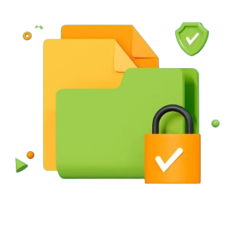

Política de Proibição de Software Pirata ou Não Autorizado
Política de Segurança de Informação (PSI) da SEINFRA.
...
Prezados Colaboradores,
Informamos que a utilização de softwares não licenciados ou de qualquer natureza ilícita é estritamente proibida no âmbito deste órgão estadual, a SEINFRA. Solicitamos que todos os colaboradores se mantenham em conformidade com a Política de Segurança de Informação (PSI) vigente, contribuindo para a proteção da segurança e da integridade das operações institucionais.
Lembramos que o uso de softwares, hardwares ou qualquer tecnologia que não esteja licenciada e aprovada pela SEINFRA é proibido. Assim, qualquer problema, como multas ou outras punições, será responsabilidade de quem causar a infração.
Aviso Importante sobre o Uso de Softwares Não Licenciados
Recentemente, a Superintendência de Tecnologia da Informação (STI) foi notificada pela Autodesk sobre a utilização não autorizada de produtos da solução AEC Collection em computadores no domínio Goias.gov.br . O relatório apresentado pela empresa detalha o uso de softwares não licenciados em diversos órgãos estaduais, o que constitui uma infração grave às normas de propriedade intelectual e pode gerar consequências legais e administrativas severas.
Impactos de uma Invasão Cibernética:
Uma invasão cibernética pode causar sérios prejuízos à sua secretaria. Dados confidenciais, como informações de clientes e documentos financeiros, podem ser roubados ou expostos, comprometendo a confiança na organização. Além disso, ataques podem paralisar sistemas, interromper operações e gerar custos altos de recuperação. Em casos mais graves, a secretaria pode enfrentar processos legais e danos irreversíveis à reputação. Adotar medidas de segurança digital é essencial para proteger os ativos e evitar essas consequências. Não espere pelo pior, invista em prevenção!

Prevenção é a Melhor Solução
Reiteramos que o uso de soluções tecnológicas devidamente licenciadas e homologadas é não apenas uma obrigação legal, mas também uma medida essencial para garantir a segurança da nossa infraestrutura digital. Evitar o uso de softwares não autorizados é um passo crucial para proteger os dados e manter a continuidade dos serviços oferecidos à população.
Contato para Suporte:
Se você tiver qualquer dúvida, dificuldade, problemas com a rede, instalação de softwares ou precisar de suporte em geral, entre em contato com o suporte através do canal de chamados:
- Canal de Chamados: https://chamado.seinfra.go.gov.br/